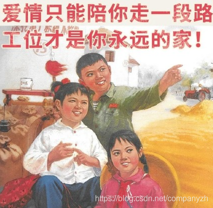

- 01 我应该站在谁的肩膀上 - OSI vs TCPIP模型.md.html
- 02 万丈高楼平地起- 物理层 + 数据链路层.md.html
- 03 OSI的灵魂就是我 - 网络层.md.html
- 04 要快还是要稳你说好了 - 传输层.md.html
- 05 是时候展现真正的技术了 - 应用层.md.html
- 06 重回小学课堂 - 二进制101.md.html
- 07 1+1 = 2吗？ - 二进制的计算.md.html
- 08 16进制又是个什么鬼？ - 16进制的讲解.md.html
- 09 我想有个家 - 什么是IP地址.md.html
- 10 我可是住二环的人 - IP地址的组成和分类.md.html
- 11 我已经没地方住了吗 - IPv6.md.html
- 12 向左还是向右 - IP路由.md.html
- 13 我能给你安全感 - TCP（一）.md.html
- 14 我那不为人知的秘密是什么 - TCP（二）.md.html
- 15 不问收没收到，就问快不快 - UDP.md.html
- 16 我为什么与众不同 - TCP高级篇（拥塞模型）.md.html
- 17 来，先看看我的家谱 - HTTP的身世.md.html
- 18 我都这么成功了，你却说我不行 - HTTP 的特点和缺点.md.html
- 19 我老了，让我儿子来吧 - HTTP2.md.html
- 20 稳重的大外甥 - HTTPS.md.html
- 21 HTTP的高级篇 - HTTPClient（Java）.md.html
- 22 想来我家，你自己查呀 - DNS.md.html
- 23 来的早，不如来得巧 - NAT.md.html
- 24 辛苦的邮政 - SMTP.md.html
- 25 你就是看不见我 - VPN.md.html
- 26 黑客的好帮手 - SSH.md.html
- 27 你可以得到我的心，却得不到我的人 - 物理安全设备.md.html
- 28 你怎么证明你就是你 - 身份验证和访问控制.md.html
- 29 我要怎么藏好我的考研资料 - 网络攻击（一）.md.html
- 30 我要怎么藏好我的考研资料 - 网络攻击（二）.md.html
- 31 如何保护我的考研资料 - 网络攻击防范.md.html
- 32 Linux网络安全 - 安全实战.md.html
- 33 结语.md.html
- 捐赠
04 要快还是要稳你说好了 - 传输层
现在，让我们继续前进。我们来一起看下一层。在上小节中，我们通过了IP知道要把包裹发给谁。我们现在必须进行设置在客户端和服务器之间建立某种会话或者说是连接，这其实和打电话时的情况非常相似，仔细想一下是不是？你打电话的时候，知道对方的电话号码也就是IP，那你怎么和对方通话呢。你不可能拿起电话就能直接说话了吧。你肯定希望它能和想要说话的人连接。你必须在自己和与之通话的人之间建立会话，对不对？我可以拿起手机，找到要呼叫的人的名字，或者在电话上拨打他们的电话号码。然后我会听并等待它响起。我会等我的朋友回答，当他们回答时，他们会打招呼。我会说，你好。现在，我们可以开始交流了。我现在说什么都没关系。但是在传输数据之前，必须经过特殊的过程，即拨打电话号码并通过协议进行连接。因此，数据网络中也会发生同样的事情。在OSI模型的第四层，我们使用一种称为“传输控制协议”，以允许我们在客户端和服务器之间建立此会话，以便可以说，是的，我们建立了该会话。现在，我想问你一些数据。OSI模型的这一层我们称为传输层，即第四层。
传输层为可靠的通信提供了完整的端到端解决方案。 TCP/IP依靠传输层有效地控制两个主机之间的通信。当IP通信会话必须开始或结束时，将使用传输层建立此连接。传输层是TCP/IP端口侦听的层。例如，尽管HTTP实际上可以在任何TCP端口上运行，但是HTTP侦听的标准端口是TCP端口80，这是标准。同样，端口80、1000或50000之间没有区别。任何协议都可以在其上运行。标准化的端口号用于帮助缓解为知名应用程序协商端口号的需求。
网络层协议只提供了点到点的连接，而传输层协议提供一种端到端的服务，即应用进程之间的通信。
那什么是点到点和端到端呢？
端到端是网络连接，点到点是物理拓扑。
端到端可以这样理解，比如说你老板去坎昆开会住在Grand Fiesta Americana Coral Beach Cancún。
让你负责订机票和酒店，对于你老板来说，从他/她家到这个酒店就是端到端。就是从A到B，但是老板可能瞬移过来吗，不会吧。你老板可能要先打车到机场，然后坐飞机可能先飞到美国，在转机坎昆，然后再打车到酒店，这其中的每一个步骤就是点到点。
所以说端到端其实是网络连接。网络想要通信，首先必须要建立连接，不管隔着千山万水，中间有多少机器和路由，都必须在两端（就是我们所说的Source和Destination）间建立连接，一旦连接建立起来，就说已经是端到端的连接了，所以端到端是逻辑链路，其中包含着无数个辛苦工作的点到点（就好像我们这些高贵的打工人一样）。

在这一层，我们知道的最有名的协议就是TCP和UDP。
我们来简单看一下TCP和UDP
TCP的介绍
TCP的全称是（Transmission Control Protocol）它是一种通信协议，通过该协议，数据可以通过网络在系统之间传输。在这种情况下，数据以数据包的形式传输。它包括错误检查，保证传递并保留数据包的顺序。
TCP使用流控制机制，通过一次发送太多数据包来确保发送者不会压倒接收者。 TCP将数据存储在发送缓冲区中，并在接收缓冲区中接收数据。当应用程序准备就绪时，它将从接收缓冲区读取数据。如果接收缓冲区已满，则接收器将无法处理更多数据并将其丢弃。为了保持可以发送给接收方的数据量，接收方告诉发送方接收缓冲区中有多少剩余空间（接收窗口）。每次接收到数据包时，都会使用当前接收窗口的值向发送方发送一条消息。
当你在浏览器中请求网页时，计算机会将TCP数据包发送到该网络服务器的地址，并要求其将网页发送回给你。 Web服务器通过发送TCP数据包流进行响应，你的Web浏览器将这些数据包缝合在一起以形成网页。当你单击链接，登录，发表评论或执行其他任何操作时，Web浏览器将TCP数据包发送到服务器，而服务器将TCP数据包发送回。
当提到TCP，你首先能想到的就是可靠。
所以TCP发送的数据包，在传输过程中不会丢失或破坏任何数据。这就是即使出现网络故障也不会损坏文件下载的原因。当然，如果收件人完全脱机，则你的计算机将放弃，并且你会看到一条错误消息，指出它无法与远程主机通信。TCP通过两种方式实现这一目标。首先，它通过对数据包编号来对其排序。其次，它通过让收件人将响应发送回发件人说已收到消息来进行错误检查。如果发件人没有收到正确的答复，它可以重新发送数据包以确保收件人正确接收它们。
也许TCP对于其他人来说，代名词是三次握手，TCP使用三次握手建立可靠的连接。连接是全双工的，并且双方彼此同步（SYN）和确认（ACK）。这四个标志的交换通过三个步骤（SYN，SYN-ACK和ACK）执行。“正常” 的TCP连接拆除是通过4次握手进行的。这个三次握手的协议其实和良好的通信是很相通的。
比如我曾经参加过一个training。是教你怎么和别人良好的沟通，其中一点就是重复确认。比如美国队长问黑寡妇，您吃了吗？黑寡妇回答，你是问我您吃了吗？美国队长说，是的。然后黑寡妇就可以回答，我吃了或者没吃，但是你有没有发现。在黑寡妇正式回答问题之前，是不是也使用了“三次握手”的原则来建立连接，下次你如果记不住的话，就想一下我说的这个例子。
那我们来看一下分手为什么要复杂一点呢。比如美国队长和黑寡妇谈恋爱，但是两人身高差太多，决定要分手，这时候美队和黑寡妇说，我觉得你很漂亮，但是我想和你分手，这时候黑寡妇说好的。我同意你的分手请求，但是作为女孩子这时候是不是要挽回一点面子，她会再说一句，记住了不是你和我分手，而是我和你分手。美队听了之后，只能回一个，好吧，我也同意和你分手，这样两人是不是就彻底分了。同理，我也希望你能记住美队和黑寡妇这段10秒钟的恋情是来帮助你学习TCP的分手过程。
UDP的介绍
其实UDP的优点还是很多的，除了不能保证错误检查和数据恢复之外，它与TCP协议相同。如果使用此协议，则无论接收端出现什么问题，数据都会连续发送。UDP不提供流控制。使用UDP，数据包以连续流的形式到达或被丢弃。它丢弃了所有的错误检查内容。因为所有来回通信都会引入延迟，从而降低速度。
当应用程序使用UDP时，数据包仅发送给收件人。发件人不会等着确定收件人是否收到了数据包，而是继续发送下一个数据包。如果收件人在这里和那里缺少一些UDP数据包，他们只是失去了，发件人不会重新发送它们（就好像某些无良快递一样，丢了就是丢了）。丢失所有这些开销意味着设备可以更快地进行通信。当需要速度且不需要纠错时，使用UDP。例如，UDP常用于直播和在线游戏。你可能不知道，QQ 就是以UDP协议为主，以TCP协议为辅的。感兴趣的你查一下微信是什么连接的。
假设你正在观看实时视频流，该视频流通常使用UDP而不是TCP进行广播。服务器只是向观看的计算机发送恒定的UDP数据包流。如果几秒钟失去连接，视频可能会冻结或跳动一会儿，然后跳到广播的当前位置。如果遇到较小的数据包丢失，则由于视频继续播放而没有丢失的数据，因此视频或音频可能会暂时失真。
这在网络游戏中也类似。如果你错过了一些UDP数据包，则当你收到较新的UDP数据包时，播放器角色可能会在地图上传送。如果你错过了旧数据包，就没有必要索要这些数据了，因为没有你，游戏将继续进行。重要的是游戏服务器上正在发生的事情，而不是几秒钟前发生的事情。放弃TCP的错误校正有助于加快游戏连接速度并减少延迟。
当然这也是我们后面要重点讲的两个协议。这里只是抛砖引玉。那是因为TCP和UDP是那么的重要。所以我们一定要深入的来探讨和学习。后面会详细到你想不理解都难。
© 2019 - 2023 Liangliang Lee. Powered by gin and hexo-theme-book.